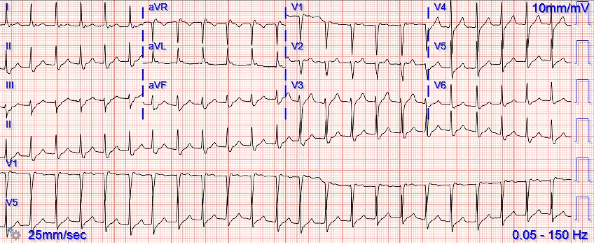
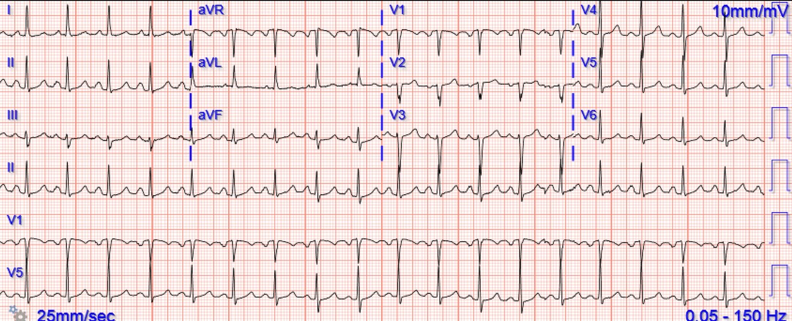
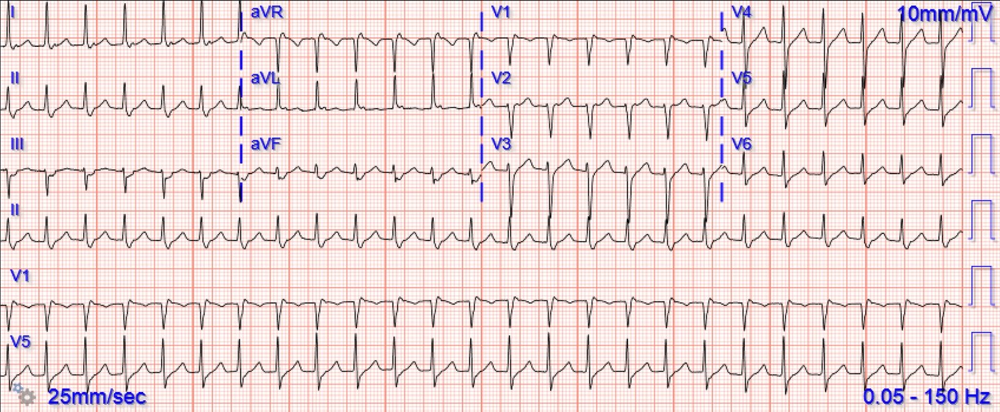
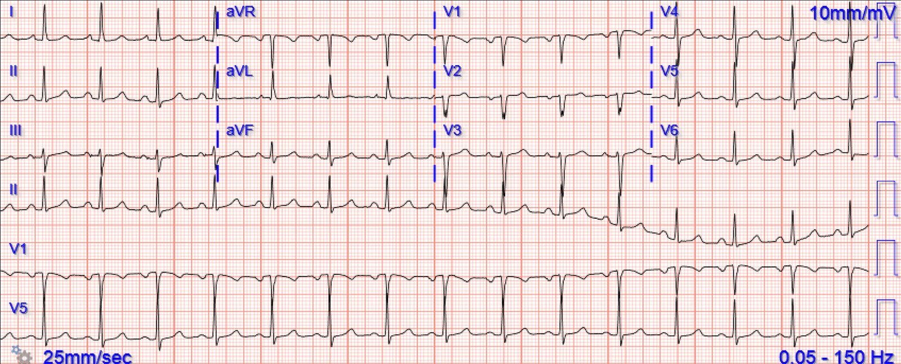
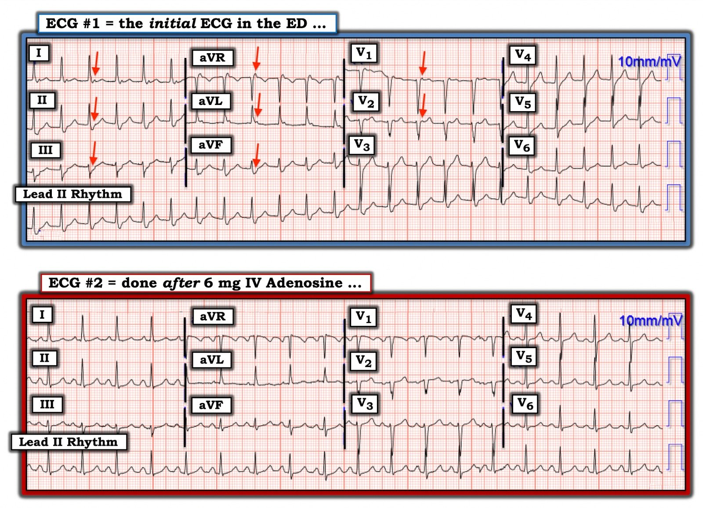

25/10/2022 — Trở lại những điều cơ bản: đây là nhịp gì? Có những lựa chọn nào để điều trị bệnh nhân này?
Bản dịch tiếng Việt của bài "Back to basics: what is this rhythm? What are your options for treating this patient?" – Dr. Smith’s ECG Blog. Giữ nguyên toàn bộ 6 hình ảnh của bản gốc.
Bài viết của Bobby Nicholson MD, được Meyers, Smith, Grauer biên tập
Một phụ nữ ngoài 40 tuổi đến khoa cấp cứu để được đánh giá vì hồi hộp đánh trống ngực. Bà cho biết đã bị triệu chứng này kể từ khi được chẩn đoán COVID cách đây hơn 1 tuần một chút. Bà khai có tiền sử nhịp nhanh trên thất (SVT) và trước đây đã tự làm nghiệm pháp cường phế vị tại nhà với kết quả hết triệu chứng. Bà cho biết hiện nay không thể tự cắt cơn hồi hộp bằng nghiệm pháp cường phế vị được nữa và đang bị khó thở cùng đau ngực âm ỉ. Điện tâm đồ ban đầu của bà ở bên dưới.


Chúng ta thấy một nhịp nhanh đều với phức bộ QRS hẹp và
không có bằng chứng của OMI hay thiếu máu cục bộ dưới nội tâm mạc. Chẩn đoán phân biệt của một nhịp nhanh QRS hẹp đều gồm nhịp nhanh xoang, SVT và cuồng nhĩ dẫn truyền đều. Không có sóng P đi trước các phức bộ QRS, và không có sóng cuồng nhĩ
rõ ràng. SVT là nhịp có khả năng cao nhất, vượt trội hẳn, trong ca này.
Có sóng P ngược dòng thấy ngay sau phức bộ QRS ở hầu hết các chuyển đạo. Chẳng hạn, chúng đảo ngược ở chuyển đạo II.
Bệnh nhân được điều trị bằng adenosine 6mg tiêm tĩnh mạch nhanh. Điện tâm đồ sau đây được ghi sau khi dùng
adenosine.


Lúc này bệnh nhân ở nhịp nhanh xoang. Thật không may, ngay sau khi
ghi điện tâm đồ này, bệnh nhân quay lại SVT.


Smith: có nên cho adenosine lần nữa không?
Smith: Không! Adenosine đã có tác dụng. Nó đã chuyển nhịp. Nhưng adenosine chỉ tác dụng trong vài giây, và nếu rối loạn nhịp tái phát thì adenosine đã hết rồi.
Chúng ta cần làm một hoặc cả hai việc sau:
1. Ngăn rối loạn nhịp khởi phát — có thể làm điều này bằng thuốc chẹn beta nhờ ngăn ngừa các PAC
2. Có một thuốc ức chế nút AV tác dụng kéo dài — có thể làm điều này bằng một thuốc ức chế nút AV tác dụng dài hơn: cả thuốc chẹn beta hoặc thuốc chẹn kênh calci.
Do đó metoprolol (thuốc chẹn beta) làm được CẢ HAI việc
1. Ngăn PAC khởi phát SVT
2. Ức chế nút AV để ngăn sự lan truyền.
Diltiazem và verapamil (thuốc chẹn kênh calci) ức chế dẫn truyền AV
Liều dùng
- Metoprolol
- 5 mg tĩnh mạch mỗi 5 phút x 3 lần (tối đa 15 mg), sau đó 25-50 mg đường uống.
-
Verapamil
- Liều 2.5-5 mg tĩnh mạch trong 2 phút (trong 3 phút ở bệnh nhân cao tuổi).
- Một liều tiếp theo 5-10 mg (0.15 mg/kg) tĩnh mạch được dùng sau 15-30 phút nếu SVT vẫn còn và không có phản ứng có hại. Liều tối đa là 20-30 mg.
- Có thể tiếp theo bằng truyền liên tục 0.005 mg/kg/phút.
-
Diltiazem
- Liều 0.25 mg/kg tĩnh mạch trong 2 phút.
- Một liều tiếp theo 0.35 mg/kg tĩnh mạch được dùng nếu không thấy đáp ứng và không có biến cố có hại đáng kể nào do thuốc
Bệnh nhân
vẫn ổn định huyết động và được điều trị bằng 10 mg diltiazem tĩnh mạch. Điện tâm đồ
sau đây được ghi lại


Sau điều trị bằng diltiazem, bệnh nhân duy trì
nhịp xoang bình thường với tần số liên tục dao động từ 80 đến hơn 90 nhịp/phút.
Vì SVT tái phát mà nguyên nhân chưa được giải quyết rõ ràng, bệnh nhân được nhập viện để theo dõi thêm và không có lần tái phát nào. Bệnh nhân được siêu âm tim, kết quả bình thường. Bệnh nhân được kê diltiazem đường uống để phòng tái phát và được xuất viện.

===================================
BÌNH LUẬN CỦA TÔI, bởi KEN GRAUER, MD (25/10/2022):
===================================
Bài blog hôm nay ôn lại chủ đề quan trọng về cách tiếp cận bệnh nhân đến khám vì hồi hộp đánh trống ngực do một nhịp SVT (nhịp nhanh trên thất — SupraVentricular Tachycardia). Tôi tập trung bình luận vào một số điểm bổ sung nhằm bổ khuyết cho phần bàn luận xuất sắc ở trên của BS. Nicholson và BS. Meyers.
- Bệnh nhân hôm nay là một phụ nữ 43 tuổi có tiền sử “SVT” từng lúc mà trước đây đã đáp ứng với nghiệm pháp cường phế vị do bệnh nhân tự làm tại nhà.
Vài suy nghĩ chung về SVT:
Trước đây tôi đã ôn lại chi tiết một cách tiếp cận SVT đều (Xin xem phần Bình luận của tôi — ở cuối trang trong bài ngày 6 tháng Ba năm 2020 trên Dr. Smith’s ECG Blog). Những điểm liên quan từ phần bàn luận đó áp dụng cho ca hôm nay gồm:
- Việc biết bệnh nhân hôm nay có tiền sử “SVT” từng lúc không cho chúng ta biết nhịp cụ thể là nhịp gì. Ngay cả những người thầy thuốc giàu kinh nghiệm cũng mắc sai lầm khi dùng thuật ngữ “SVT” như một chẩn đoán cụ thể — trong khi thực ra thuật ngữ chung này bao gồm mọi rối loạn nhịp có tần số “nhanh” (tức là ≥100 ở người lớn). Trong đó có nhịp nhanh xoang, rung nhĩ hoặc cuồng nhĩ, nhịp nhanh nhĩ đa ổ (MAT) và các nhịp khác. Nguyên nhân và cách điều trị của các dạng “SVT” khác nhau này có thể khác nhau.
- Dù đã nói như trên — việc bệnh nhân hôm nay kể rằng đã thành công với nghiệm pháp cường phế vị tại nhà gợi ý mạnh rằng chúng ta đang đối mặt với một dạng nhịp SVT vào lại nào đó.
- Để chăm sóc tối ưu bệnh nhân hôm nay cả ở giai đoạn đầu lẫn lâu dài — những đặc điểm bổ sung trong bệnh sử cần hỏi gồm: i) Bệnh nhân đã bị SVT bao lâu rồi? — Bao lâu bị một lần? — và — Nghiệm pháp cường phế vị mất bao lâu mới có tác dụng?; ii) Có yếu tố khởi phát cụ thể nào không? (tức là mất nước, các giai đoạn căng thẳng hay lo âu tăng lên, chất kích thích như caffeine, rượu, ma túy dùng để tiêu khiển, v.v.); iii) Bệnh nhân đã phải đến khoa cấp cứu (ED) vì SVT bao nhiêu lần?; và, iv) Các cách điều trị đã thử trước đây?
Chẩn đoán nhịp hôm nay:
Tôi ưa chuộng cách tiếp cận hệ thống khi đọc nhịp — trong đó mẹo ghi nhớ “Watch your Ps, Qs and 3Rs” (hãy để ý các P, Q và ba R) nhắc tôi về 5 thông số MẤU CHỐT cần đánh giá (BẤM VÀO ĐÂY — nếu bạn muốn tìm hiểu thêm về cách tiếp cận Ps, Qs, 3R này).
- Để cho rõ, trong Hình 1 — tôi đã chép lại và đánh dấu điện tâm đồ ban đầu của ca hôm nay, cùng với điện tâm đồ 12 chuyển đạo ghi lại sau khi tiêm tĩnh mạch 6 mg adenosine.
- Áp dụng cách tiếp cận Ps, Qs, 3R cho điện tâm đồ #1 — có một nhịp SVT ( = QRS hẹp) đều với tần số ~140/phút, không có dấu hiệu của sóng P xoang.
- ĐIỂM THEN CHỐT (PEARL): Cần ghi nhớ tầm quan trọng của tần số của một nhịp SVT đều — vì những thực thể như nhịp nhanh xoang (với sóng P xoang ẩn trong sóng T đi trước) và cuồng nhĩ (dẫn truyền AV 2:1) trở nên ít có khả năng hơn nhiều khi tần số của một SVT đều vượt quá ~170/phút.
- Ngược lại, một nhịp SVT đều với tần số trong khoảng ~130-160/phút (như ca hôm nay) — có chẩn đoán phân biệt gồm i) Nhịp nhanh xoang; ii) AFlutter (cuồng nhĩ — Atrial Flutter); iii) ATach (nhịp nhanh nhĩ — Atrial Tachycardia); và/hoặc, iv) Một nhịp SVT “vào lại” (trong đó AVNRT và AVRT xuôi chiều là các dạng thường gặp nhất).
THỬ THÁCH:
Hãy so sánh hình dạng QRS của 2 điện tâm đồ trong Hình 1. Chú ý các mũi tên ĐỎ trong điện tâm đồ #1 — Hình dạng QRS giữa 2 bản ghi này khác nhau ở điểm nào?
- Về lâm sàng — Sự khác biệt này có ý nghĩa gì?


Những mũi tên ĐỎ trong điện tâm đồ #1:
Các mũi tên ĐỎ trong Hình 1 làm nổi bật 7 chuyển đạo trong điện tâm đồ #1 cho thấy hoạt động nhĩ ngược dòng trong cơn nhịp nhanh.
- ĐIỂM THEN CHỐT (PEARL): Ý nghĩa lâm sàng của việc nhận ra dẫn truyền nhĩ ngược dòng trong một nhịp SVT đều (như ở ca hôm nay) — là nó khẳng định chẩn đoán một nhịp SVT vào lại! Nhịp nhanh xoang, AFlutter và ATach không tạo ra hình ảnh này.
- Xin nhấn mạnh — Việc thấy bằng chứng rõ ràng của dẫn truyền ngược dòng ở nhiều chuyển đạo như các mũi tên ĐỎ chỉ ra trong điện tâm đồ #1 là không thường gặp. Lý do tôi làm nổi bật dấu hiệu này — là vì biết cách tìm hoạt động nhĩ ngược dòng thật sự hữu ích khi sự hiện diện của nó tinh tế hơn nhiều. Đó là vì một khi đã khẳng định được chẩn đoán SVT vào lại — chúng ta biết điều trị tối ưu tại khoa cấp cứu sẽ là gì nếu liều adenosine đầu tiên không hiệu quả (tức là nhắc lại adenosine và/hoặc diltiazem, verapamil hay một thuốc chẹn ß).
Cách khẳng định dẫn truyền ngược dòng:
Dẫn truyền ngược dòng tạo ra một sóng P âm xuất hiện sau QRS ở các chuyển đạo thành dưới. Đó là vì xung động ngược dòng đi xa khỏi hướng của chuyển đạo II, vốn có hướng dương ở +60 độ.
- Vì vậy, khi tìm hoạt động nhĩ ngược dòng — trước tiên tôi tập trung chú ý vào phần cuối cùng của QRS ở các chuyển đạo thành dưới (II,III,aVF) — tìm một khía hoặc sóng lệch âm ở một hay nhiều chuyển đạo này. “Giả sóng S” rộng thấy ở mỗi chuyển đạo thành dưới trên điện tâm đồ #1 là bất thường rõ rệt, nhất là khi không có dẫn truyền kiểu RBBB. Bằng chứng cho thấy đây thật sự là dẫn truyền nhĩ ngược dòng trên điện tâm đồ #1 — có được khi so sánh các chuyển đạo này trên điện tâm đồ #2, trong đó sóng lệch âm “giả sóng S” ở các chuyển đạo thành dưới sau khi chuyển về nhịp xoang hẹp hơn nhiều.
- Sau các chuyển đạo thành dưới — tôi xem tiếp các chuyển đạo bên phải là aVR và V1 — nơi dẫn truyền ngược dòng thường hiện ra dưới dạng một “sóng lệch giả r’” dương ngắn (các mũi tên ĐỎ ở chuyển đạo aVR và V1 trên điện tâm đồ #1). Lưu ý rằng sóng lệch giả r’ này không còn trên điện tâm đồ #2 sau khi chuyển về nhịp xoang.
- Đôi khi chuyển đạo aVL cho thấy dẫn truyền ngược dòng dưới dạng một sóng lệch dương sau QRS (như thấy trên điện tâm đồ #1).
- Theo kinh nghiệm của tôi — ít gặp dẫn truyền ngược dòng ở các chuyển đạo khác hơn.
- GỢI Ý: Cách để giỏi nhận ra dẫn truyền ngược dòng trong các nhịp SVT đều — là thường xuyên quay lại so sánh những sóng lệch mà bạn thấy đáng ngờ trong cơn nhịp nhanh — với hình dạng QRS ở chính các chuyển đạo đó sau khi chuyển về nhịp xoang. ĐIỀU CỐT LÕI: Thật tốt khi có thể chẩn đoán chắc chắn rằng nguyên nhân của nhịp SVT đều trước mặt bạn là một SVT vào lại. Nhận ra dẫn truyền nhĩ ngược dòng trong một nhịp SVT đều cho phép bạn làm được điều đó.
- CẢNH BÁO: Điều ngược lại thì không nhất thiết đúng — vì một số trường hợp AVNRT có khoảng RP’ ngắn đến mức sóng P ngược dòng bị ẩn trong phần cuối của QRS (và do đó không thấy được trên điện tâm đồ).
ĐIỂM THEN CHỐT (PEARL): Khoảng RP’ (tức là khoảng cách từ sóng P ngược dòng đến sóng R đi trước) — có thể cung cấp manh mối về cơ chế của SVT vào lại. Ví dụ — khoảng RP’ rất ngắn (trong đó sóng P ngược dòng tạo khía ở phần cuối của phức bộ QRS) — gợi ý vòng vào lại nằm bên trong nút AV. Ngược lại — khoảng RP’ dài hơn (trong đó sóng P ngược dòng tạo khía ở một phần đoạn ST) gợi ý rằng một đường phụ AP (Accessory Pathway) nằm “xa hơn” (tức là ở ngoài nút AV) có thể đang tham gia vào vòng vào lại.
- Các mũi tên ĐỎ trong ca hôm nay gợi ý khoảng RP’ khá ngắn — phù hợp hơn với AVNRT.
- Để tìm hiểu thêm về khái niệm dẫn truyền ngược dòng trong nhịp SVT đều — mời xem Bình luận của tôi ở cuối trang trong bài ngày 6 tháng Ba năm 2020 của Dr. Smith's ECG Blog.
Vài suy nghĩ cuối cùng về ca hôm nay:
Hoàn toàn không có gì ngạc nhiên khi nhịp SVT vào lại trong ca hôm nay tái phát ngay sau khi dùng Adenosine tĩnh mạch (tức là thời gian bán thải của Adenosine tĩnh mạch dưới 10 giây!). Vì vậy — nên dự liệu rằng có thể cần bổ sung một thuốc tác dụng dài hơn để duy trì nhịp xoang (như đã làm với Diltiazem trong ca hôm nay). Trong số những điều cần cân nhắc sau khi bệnh nhân hôm nay ra viện có những điểm sau:
- Cần nhận thức rằng ở người trẻ tuổi không có bệnh tim nền (tức là siêu âm tim không có gì đáng kể) — SVT vào lại là một rối loạn nhịp không đe dọa tính mạng và thường khá lành tính. Vì vậy — chỉ định điều trị chính là để kiểm soát triệu chứng. Làm điều này tốt nhất ra sao tùy thuộc vào câu trả lời cho loạt câu hỏi trong phần Bệnh sử mà tôi đã gợi ý ở trên (trong mục Vài suy nghĩ chung về SVT).
- Không cần chuyển ngay bệnh nhân hôm nay đến chuyên khoa điện sinh lý (EP) để triệt đốt. Dù điều trị SVT vào lại bằng triệt đốt rất hiệu quả, với hồ sơ an toàn tuyệt vời khi thực hiện ở trung tâm có kết quả tốt — thủ thuật này vẫn có khả năng gây biến chứng với tỷ lệ nhỏ nhưng có thật. Nên cho bệnh nhân lựa chọn giữa thử dùng thuốc hay triệt đốt đối với rối loạn nhịp không đe dọa tính mạng này. Rõ ràng, triệt đốt điện sinh lý trở nên có chỉ định ở bệnh nhân có SVT tái phát thường xuyên, kháng trị — nhưng không nhất thiết trước đó.
- Điều trị “tốt nhất” cho SVT vào lại tái phát là tìm và khắc phục yếu tố khởi phát, khi có. Tôi từng có những bệnh nhân mang thai chỉ bị SVT vào lại trong thời gian mang thai. Tôi cũng từng có những bệnh nhân khác hay tái phát SVT trong các giai đoạn căng thẳng/lo âu nặng — và các cơn SVT vào lại được kiểm soát khi những yếu tố khởi phát này được kiểm soát. Dùng quá nhiều caffeine hoặc thuốc cường giao cảm không kê đơn (OTC) là những yếu tố khởi phát tiềm tàng khác, có thể dễ dàng kiểm soát một khi đã nhận ra.
- Các thuốc thường dùng để ngăn chặn các cơn SVT vào lại tái phát gồm Diltiazem, Verapamil hoặc thuốc chẹn ß. Những thuốc này không nhất thiết phải dùng liên tục vô thời hạn. Hoàn cảnh sống thay đổi. Bệnh nhân của tôi bị SVT do căng thẳng đã ổn định trong nhiều tháng liền khi căng thẳng của cô ấy được kiểm soát. Cô ấy ngừng Diltiazem hằng ngày trong những giai đoạn ít căng thẳng hơn — rồi dùng lại Diltiazem hằng ngày khi các yếu tố gây căng thẳng trong cuộc sống quay trở lại.
- Với bệnh nhân tái phát không thường xuyên và dễ kiểm soát bằng thuốc ức chế nút AV — dùng “thuốc khi cần (prn)” (tức là cho phép bệnh nhân tự dùng tại nhà một liều Diltiazem, Verapamil hoặc thuốc chẹn ß) lúc tái phát, rồi vào một phòng yên tĩnh — có thể làm cắt cơn SVT trong vòng 30-120 phút, nhờ đó tránh phải đến khoa cấp cứu.
- ĐIỀU CỐT LÕI: Xử trí lâu dài bệnh nhân SVT vào lại nên được cá thể hóa theo hoàn cảnh sống của từng bệnh nhân cụ thể.